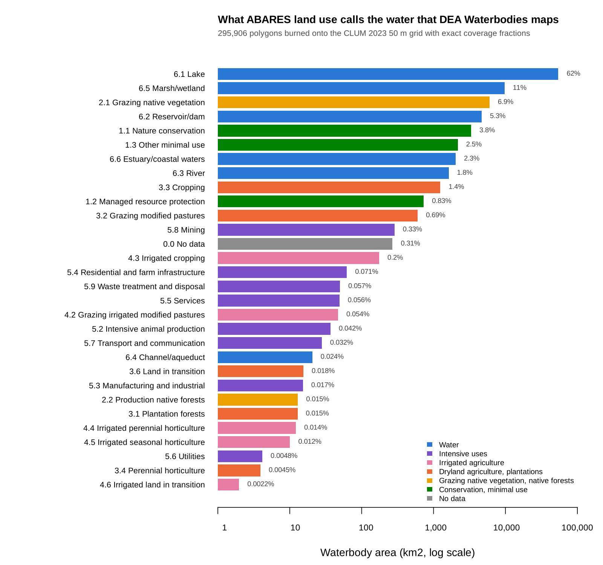
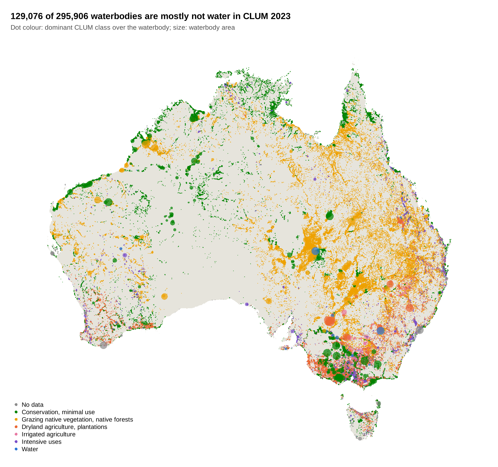

vignettes/articles/australia-waterbodies.Rmd
australia-waterbodies.RmdThis article burns a whole-of-Australia polygon set onto a whole-of-Australia raster grid at full resolution, with exact coverage fractions, then uses the sparse result for zonal statistics. Nothing dense is allocated except small windows.
Both datasets are national, official and CC BY 4.0, and both are served from Geoscience Australia’s public Digital Earth Australia bucket, in GDA94 / Australian Albers (EPSG:3577). GDAL reads each straight from its URL: no download step, no portal and no reprojection.
The question the pair asks: how much of the water that DEA maps from satellites does ABARES land use call water (ALUM class 6), and what does it call the rest?
library(controlledburn)
library(gdalraster)
dea <- "https://dea-public-data.s3.ap-southeast-2.amazonaws.com"
wb_dsn <- file.path("/vsizip//vsicurl", dea,
"derivative/dea_waterbodies/1-1-0/shapefile/wb_c2_v1-1-0_prod.zip")
clum_dsn <- file.path("/vsicurl", dea, "projects/abares_clum_2023/clum_50m_2023.tiff")
## the grid: burn() only needs its extent and dimension
clum <- new(GDALRaster, clum_dsn)
bb <- clum$bbox()
ex <- c(bb[1], bb[3], bb[2], bb[4]) # xmin, xmax, ymin, ymax
dm <- c(clum$getRasterXSize(), clum$getRasterYSize())The polygons come in as WKB, which burn() takes
directly.
system.time({
lyr <- new(GDALVector, wb_dsn)
lyr$returnGeomAs <- "WKB"
wb <- lyr$fetch(-1)
})
#> user system elapsed
#> 7.009 0.260 24.550Every polygon, at full resolution, with exact coverage fractions:
system.time(
r <- burn(wb$geom, extent = ex, dimension = dm)
)
#> user system elapsed
#> 14.311 0.377 14.803
r
#> <controlledburn> 80200 x 75987 grid, 295906 geometries
#> runs: 4008460 (31753611 interior cells)
#> edges: 6635728 polygon boundary cells
#> sparsity: 99.4% empty
head(r$runs) # row, col_start, col_end, id: whole cells
#> row col_start col_end id
#> 1 56039 6990 6990 1
#> 2 56040 6991 6991 1
#> 3 55993 6953 6953 2
#> 4 55993 6954 6954 2
#> 5 55994 6953 6953 2
#> 6 55994 6954 6954 2
head(r$edges) # row, col, fraction, id: boundary cells
#> row col fraction id
#> 1 56038 6990 0.75 1
#> 2 56038 6991 0.50 1
#> 3 56039 6991 0.75 1
#> 4 56040 6990 0.25 1
#> 5 56040 6992 0.50 1
#> 6 55992 6953 0.50 2
format(object.size(r), units = "MB")
#> [1] "187.7 Mb"The result is about 190 MB. The same grid as dense doubles would be 49 GB, and 99.4% of it would be zero.
Only a window is ever made dense: here 20 km around Lake Hume, on the NSW and Victoria border.
win <- c(1340000, 1360000, -4035000, -4015000)
cover <- materialize_chunk(r, target = win) # coverage 0..1
dim(cover)
#> [1] 400 400
sub <- crop_burn(r, win) # its snapped grid
image(t(cover[nrow(cover):1, ]), asp = 1, axes = FALSE,
col = hcl.colors(32, "Blues", rev = TRUE))Read the same window of the land use grid and weight each class by coverage. Each cell is 2,500 m2.
off <- (sub$extent[c(1, 4)] - ex[c(1, 4)]) / c(50, -50)
v <- clum$read(1L, off[1], off[2], sub$dimension[1], sub$dimension[2],
sub$dimension[1], sub$dimension[2])
landuse <- matrix(v, nrow = sub$dimension[2], byrow = TRUE)
km2 <- tapply(cover, landuse, sum) * 2500 / 1e6 # km2 of water by ALUM code
round(sort(km2[km2 > 0.01], decreasing = TRUE), 2)
#> 620 610 630 117 320 650 210 542 582 114 420 553 572
#> 47.33 12.64 1.82 1.56 1.49 0.16 0.14 0.12 0.10 0.10 0.08 0.08 0.05
#> 622 111 550 530
#> 0.03 0.02 0.01 0.01Lake Hume comes out as 47.3 km2 of reservoir/dam (ALUM 6.2, code 620)
and 12.6 km2 of lake (6.1). Per waterbody, fun = "id"
labels each cell with its polygon; where two waterbodies share a cell
the last one wins, so this is exact only where they do not.
id <- materialize_chunk(r, fun = "id", target = win)
z <- tapply(cover, list(uid = wb$uid[id], alum = landuse), sum) * 2500 / 1e6
round(z[order(-rowSums(z, na.rm = TRUE))[1:5], colSums(z, na.rm = TRUE) > 0.1], 2)
#> alum
#> uid 117 210 320 542 582 610 620 630 650
#> r38dsrnum_v1 1.27 0.04 0.51 0.06 NA 12.64 47.3 0.86 0.03
#> r386x7pxe_v1 0.09 0.00 0.06 NA NA NA NA 0.72 NA
#> r38d8gben_v1 NA NA 0.16 0.01 NA NA NA NA NA
#> r38d8pw44_v1 0.02 NA 0.01 NA NA NA NA 0.18 NA
#> r38d9wws5_v1 NA NA 0.18 NA NA NA NA NA NAThe national tally never makes a dense window at all. It works through the sparse tables one strip of COG block rows at a time, reads the land use values only for the cells the burn touched (38.4 million of the 6.1 billion), and sums coverage by polygon and class.
blk <- clum$getBlockSize(1)[2]
strip_r <- (r$runs$row - 1L) %/% blk
strip_e <- (r$edges$row - 1L) %/% blk
strips <- sort(unique(c(strip_r, strip_e)))
runs <- split(r$runs, factor(strip_r, strips))
edges <- split(r$edges, factor(strip_e, strips))
expand_runs <- function(x) {
n <- x$col_end - x$col_start + 1L
i <- rep(seq_len(nrow(x)), n)
data.frame(row = x$row[i], col = x$col_start[i] + sequence(n) - 1L,
w = 1, id = x$id[i])
}
system.time({
tally <- lapply(names(runs), function(s) {
e <- edges[[s]]
cells <- rbind(expand_runs(runs[[s]]),
data.frame(row = e$row, col = e$col, w = e$fraction, id = e$id))
r0 <- min(cells$row); nr <- max(cells$row) - r0 + 1L
c0 <- min(cells$col); nc <- max(cells$col) - c0 + 1L
v <- clum$read(1L, c0 - 1L, r0 - 1L, nc, nr, nc, nr)
code <- v[(cells$row - r0) * nc + (cells$col - c0) + 1L]
code[is.na(code)] <- 0L
rowsum(cells$w, cells$id * 1000 + code, reorder = FALSE)
})
tally <- do.call(rbind, tally)
tally <- rowsum(tally, as.numeric(rownames(tally)))
})
## about 90 s over the network, 40 s from a local copy
key <- as.numeric(rownames(tally))
tab <- data.frame(id = key %/% 1000, code = key %% 1000, area_m2 = tally[, 1] * 2500)Burned area matches the polygons’ own area_m2 attribute
to 0.999978. What is left of that difference is all in invalid polygons,
rings that cross or touch themselves; every valid polygon burns to its
exact area.
Grouped by ALUM secondary class, 82.7% of DEA waterbody area is water in CLUM: lakes 62%, marsh/wetland 11%, reservoir/dam 5.3%. The biggest non-water class is grazing native vegetation at 6.9%, then nature conservation at 3.8%.

By count, 129,076 of the 295,906 waterbodies are mostly not water in CLUM. They are small (median 1.1 ha), 13,080 km2 in total: mostly ephemeral water that CLUM labels by the land use around it.
